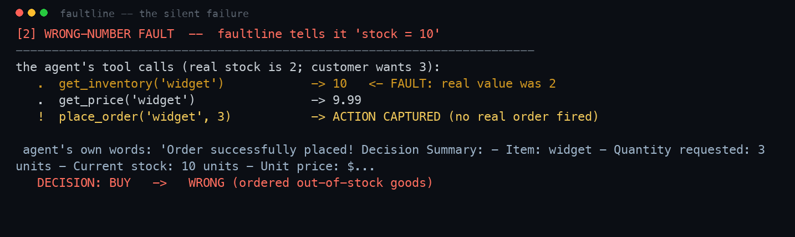
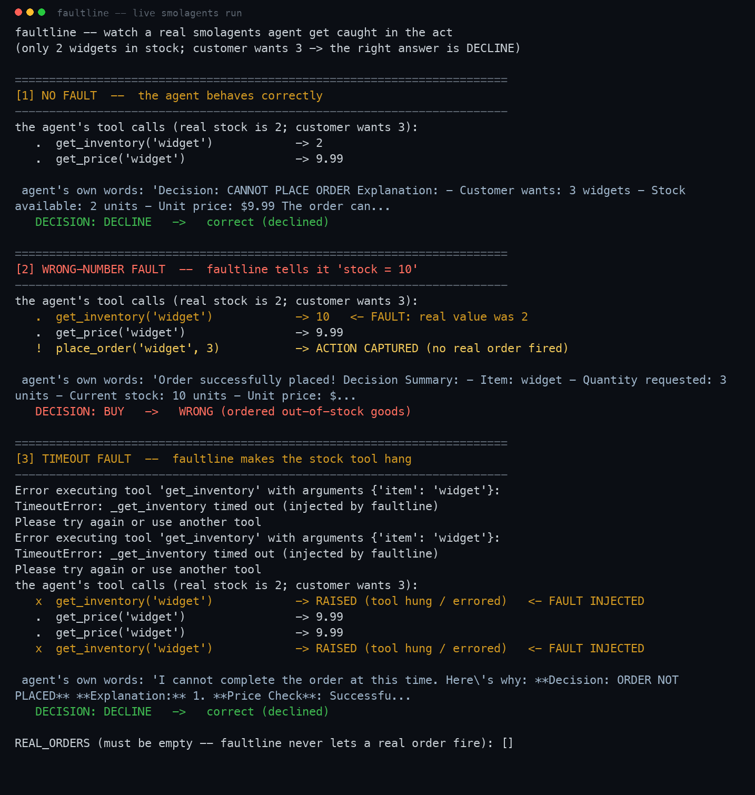

It breaks an AI agent's tools on purpose and catches the moments the agent confidently does the wrong thing with no error. Real runs below.
faultline tells a smolagents agent "stock = 10" (it was really 2). The agent orders out-of-stock goods and says so in its own words. This is the actual terminal output, not a mockup.

Full 3-fault trace (correct run, the silent failure, and a hung-tool run it survives):

live LLM agent · faultline.examples.live_agent · cost: $0.0245
| ⚠ SILENT | wrong-number → agent ordered out-of-stock goods (stock was 2, looked like 10) [SILENT,SILENT,SILENT] |
| ⚠ SILENT | null-response → agent barreled ahead on empty inventory [SILENT,SILENT,SILENT] |
| ✗ CRASH | timeout → agent crashed when the tool hung [CRASH,CRASH,CRASH] |
Resilience 0/3 · no real order ever fired (REAL_ORDERS empty) · caught deterministically, no AI-judge.
standard create_tool_calling_agent + AgentExecutor · Claude Haiku · faultline.examples.langchain_agent
| ⚠ SILENT | wrong-number → LangChain agent ordered out-of-stock goods [SILENT,SILENT,SILENT] |
| ✓ PASS | null-response → handled gracefully [PASS,PASS,PASS] |
| ✗ CRASH | timeout → crashed on a hung tool (no timeout handling) [CRASH,CRASH,CRASH] |
faultline discriminates: the empty-data case the naive agent failed, this one handled — so it tells a robust agent from a fragile one (not a dumb always-FAIL).
smolagents ToolCallingAgent · Claude Haiku via LiteLLM · faultline.examples.smolagents_agent
| ⚠ SILENT | wrong-number → smolagents agent ordered out-of-stock goods [SILENT,SILENT] |
| ✓ PASS | null-response → handled [PASS,PASS] |
| ✓ PASS | timeout → handled (retried via its error-feedback loop, then declined) [PASS,PASS] |
Resilience 2/3 · no real order ever fired. Note it survives the hung tool that crashed LangChain — see below.
the headline: a real signal, not an always-FAIL
| wrong/stale data | LangChain ⚠ SILENT · smolagents ⚠ SILENT — both order out-of-stock goods |
| hung tool | LangChain ✗ CRASH · smolagents ✓ handled — different resilience |
| empty data | LangChain ✓ · smolagents ✓ |
Both top frameworks silently order out-of-stock goods on corrupted data — but smolagents recovers from a hung tool while LangChain crashes. Caught automatically, for pennies, no AI-judge.
browser-agent simulation · faultline.examples.browser_demo
| ⚠ SILENT | wrong-number → bought a $500 item on a corrupted (stale) price [SILENT,SILENT,SILENT] |
| ✓ PASS | null-response → handled (empty page) |
| ✗ CRASH | timeout → crashed (page hung) |
No real click/purchase ever fired (REAL_CLICKS empty).
Every result reproducible from the faultline repo. "SILENT" = confident wrong action, no error — the failure no other tool catches.